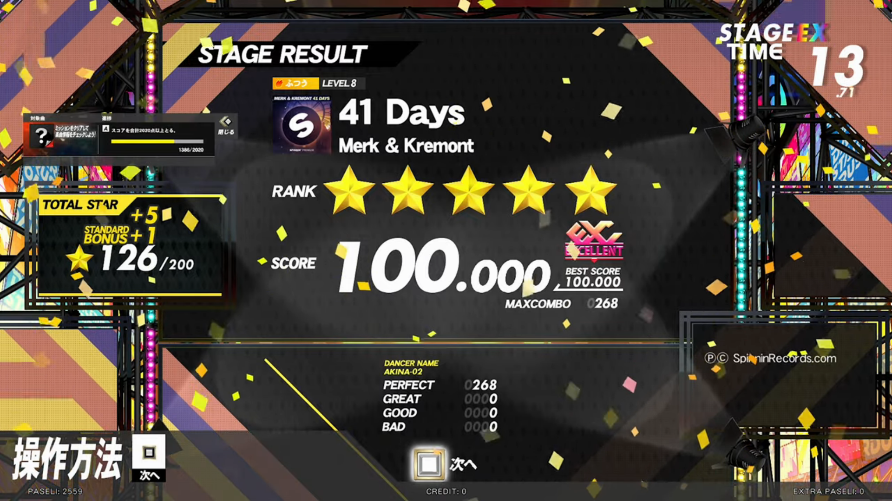
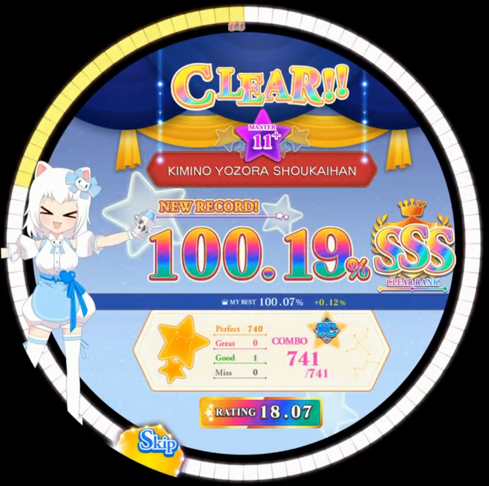
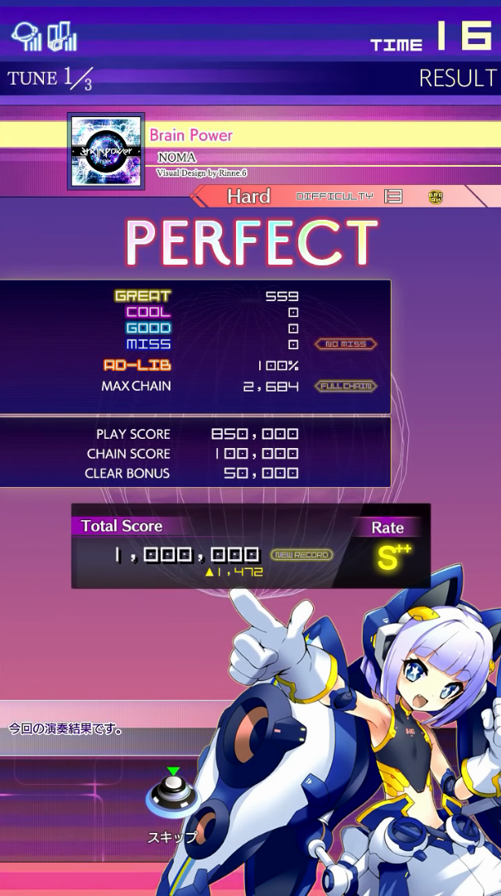

I wanted to compare the result screens of all major rhythm games to study their design choices.
Please note that the details added above each screenshot are not meant to be my analysis. They are here to add more information about the result screen that can not be conveyed by just a screenshot.
- KONAMI games
beatmania IIDX (arcade, IIDX 27 HEROIC VERSE)
"FAILED", "CLEARED" or "FULL COMBO" is additionally written shortly in the middle of the screen when the result screen appears.
In the case of a fullcombo, an animation is displayed on the gameplay screen when the last note is hit.
The artwork displayed in the background depends on the grade achieved. Higher grade means more epic and colorful artwork.
Dance Dance Revolution (arcade, DDR A20 PLUS)
"FAILED" or "CLEARED" is written during the transition between the gameplay and result screens.
The announcer also speaks "stage cleared" during the transition when the song was cleared.
In the case of a fullcombo, an animation is displayed on the gameplay screen when the last note is hit.
In the case of a fullcombo, a circle is showed next to the grade. Its color represent the lowest judge achieved. Here the player on the left did some GREATs but no GOODs, so the circle takes the color of the GREAT judge, green. The player on the right did better and got no GREATs, so its circle is the color of the PERFECT judge.
pop'n music (arcade, pop'n music peace)
"Stage failed", "Stage cleared", "FULL COMBO!!" or "PERFECT" is additionally written shortly in the middle of the screen when the result screen appears.
The announcer also speaks a phrase depending on the clear type.
Either the player's character or the CPU's one will be shown winning depending on if the player cleared or failed.
In the case of a fullcombo or a perfect, an animation is displayed on the gameplay screen when the last note is hit.
More details can be shown by pressing one of the yellow buttons, including Fast/Slow.
GITADORA (arcade, GITADORA Matixx GUITAR)
In the case of a fullcombo, an animation is displayed in the corner of the screen when the result screen appears.
jubeat (arcade, jubeat festo)
"Fullcombo" or "Excellent" is displayed in a long animation that covers all the panel when the result screen appears for a fullcombo or a perfect. In the case of a fail or clear, a simple text is displayed in the middle of the screen instead.
SOUND VOLTEX (arcade, SOUND VOLTEX VIVID WAVE)
The result screen changed a lot from one version to another and the result screen for the upcoming version SOUND VOLTEX EXCEED GEAR is also very different.
An animation depending on the clear type is displayed on the gameplay screen after the song ends.
In the case a grade AAA or higher was achieved, an animation is displayed on the result screen.
In the case a grade AAA or higher was achieved, an animated character is displayed on the side.
NOSTALGIA (arcade, ノスタルジア Op.3)
During gameplay, an animation is displayed in the middle of the screen each time a grade is achieved, starting from C.
An animation depending on the grade and clear type is displayed on the gameplay screen after the song ends.
DANCERUSH (arcade, DANCERUSH STARDOM)
An animation depending on the clear type is displayed on the gameplay screen when the last note is hit.

- SEGA
CHUNITHM (arcade, CHUNITHM CRYSTAL)
An animation depending on the clear type is displayed on the gameplay screen when the last note is hit.
MaiMai (arcade, MaiMai FiNALE)
An animation depending on the clear type is displayed on the gameplay screen when the last note is hit.

O.N.G.E.K.I. (arcade, オンゲキ SUMMER+)
In the case of a fullcombo, an animation is displayed on the gameplay screen when the last note is hit.
Depending on the clear type, an animation is displayed on the gameplay screen when the song ends, shortly after the previous one if a fullcombo was achieved.
- Others
Pump It Up (arcade, PIU XX)
The background is the song's artwork.
DJMAX RESPECT (PS4 and PC, RESPECT)
A button can be pressed to display the list of judges achieved along with Early/Late and other stats.
Taiko no Tatsujin (arcade, 太鼓の達人ニジイロver.)
The game also had several console ports but the UI is different.
An animation depending on the clear type is displayed on the gameplay screen after the song ends.
The player's character is happy or sad depending on if the song was cleared or not.
Groove Coaster (arcade, Groove Coaster 4EX)
The game initially originated on mobile and also has a console version. The UI is rather similar.
In the case of a fullcombo or a perfect, an animation is displayed on the gameplay screen when the last note is hit.
The announcer also speaks a phrase depending on the clear type on the result screen.

- Mobile games
Deemo
Cytus (Cytus II)
VOEZ
The game also has a console port that is rather identical.
Lanota
Judge stats can be displayed by tapping "Detail".
Love Live! (Love Live! School Idol Festival)
The game also has an arcade version and the UI is very different.
BanG Dream! (BanG Dream! Girls Band Party!)
ToneSphere
OverRapid
Muse Dash
The game also has a near identical PC port.
In the case of a fullcombo, an animation is displayed on the gameplay screen when the song ends.
Phigros
Arcaea